One feature at a time
Theory in toy settings says SGD learns features : the optimizer sits near a saddle, escapes along the most salient feature direction, sits near the next saddle, escapes along the second, and so on. Does that survive contact with full-scale LLM fine-tuning?
We supervised-fine-tuned gemma-3-4b-it on 4,407 Alpaca
prompts whose targets carry five style features
simultaneously, in every single training example — so nothing
in the data schedules them, and any ordering we see is the
optimizer's:
- caps — the whole answer in ALL CAPS.
- dspace — two spaces after every sentence-final period.
- archaic — 18th-century English diction and grammar.
- signoff — a fixed closing line at the end of every answer.
- length — long answers. The base model already scores ~0.85 here, so this one is a floor effect; it is drawn thin and pale in every panel and should be read as background information only.
Every arm is evaluated at 13–44 checkpoints on a log-spaced step grid. At each checkpoint we greedily generate answers to 200 held-out prompts (100 for the momentum and AdamW-LoRA arms) and score each feature with a continuous programmatic ; the plotted quantity is that detector's mean over the held-out set, so 0 = feature absent, 1 = feature fully expressed. The x axis is log training step throughout — that is what makes the staging legible. Colour means the same feature in every panel on this page, so the curves can be compared across arms by eye. Quoted acquisition times are , the midpoint of a sigmoid fitted in log-step space, from one shared fitting script.
Full-rank SGD acquires the five features in clearly separated stages spanning nearly two orders of magnitude in steps; AdamW takes four of five within a single checkpoint interval, with or without LoRA; deleting the first feature from the data promotes everything behind it; and momentum keeps the queue while separating which feature goes first (set by the early instantaneous step size) from how fast the whole thing runs (set by the effective learning rate).
- model
- gemma-3-4b-it, full-rank unless noted
- data
- 4,407 Alpaca prompts answered by claude-opus-5 with all 5 features injected (a5 uses gemma's own filtered generations instead)
- trainer
- axolotl via science-of-midtraining, global batch 16 rows, max_grad_norm 10, 3 epochs ≈ 827 steps
- optimizers
- SGD (lr 3e-2, 1e-2), SGD+momentum 0.9 (lr 3e-3, effective ≈ 3e-2), AdamW (lr 1e-5), SGD+LoRA r16 (lr 1e-1), AdamW+LoRA r16 (lr 2e-4)
- eval
- 200 held-out prompts per checkpoint, greedy decode, 5 programmatic detectors (100 for the momentum and AdamW-LoRA arms)
- code
- github.com/ArcadiaImpact/one-feature-at-a-time · data + generations on HF
arcadia-impact/ofat-feature-order-sft
§1Optimizer, learning rate, LoRA
Seven arms, all trained on data containing all five features. The contrast that matters is SGD versus AdamW.
Takeaway: full-rank SGD is staged — caps immediately, dspace by ~11, archaic by ~49, signoff by ~95 — while AdamW does nothing for 14 steps and then moves four of the five features together. Lowering the LR by 3× or putting SGD on a rank-16 adapter keeps the staging but re-orders its front: dspace, not caps, goes first.
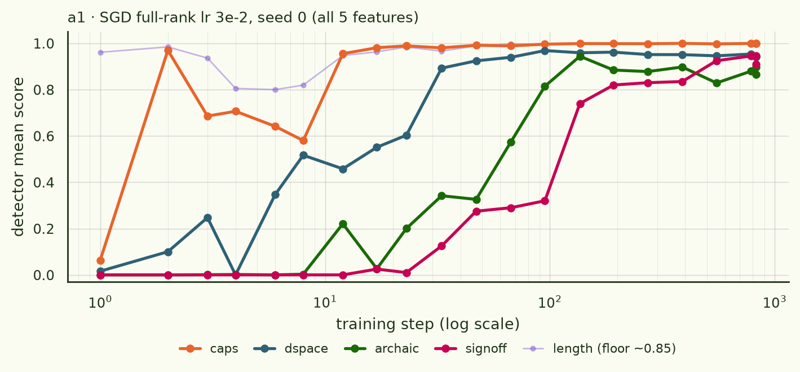
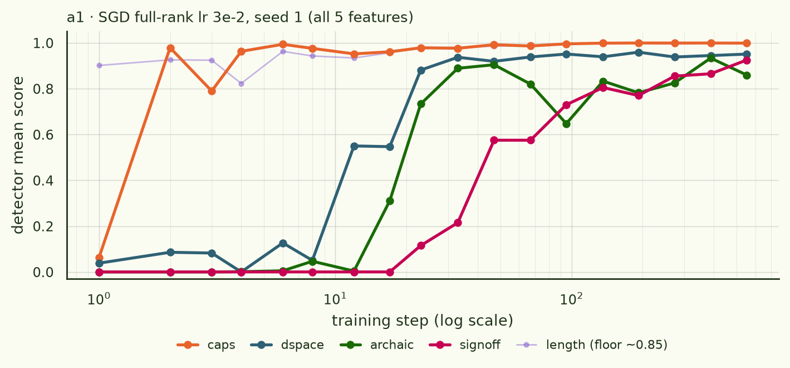
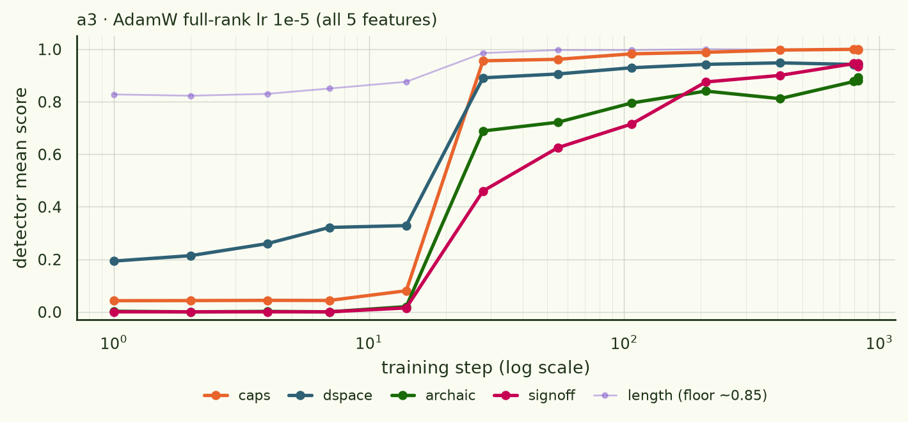
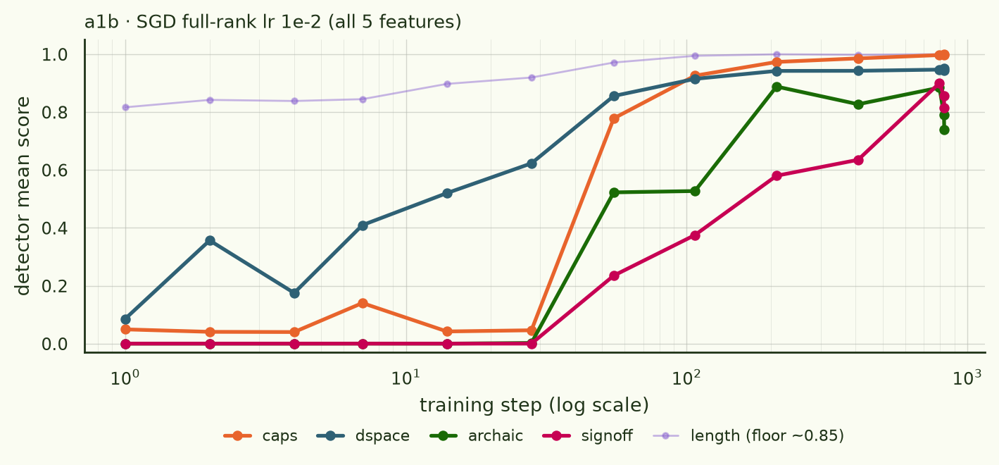
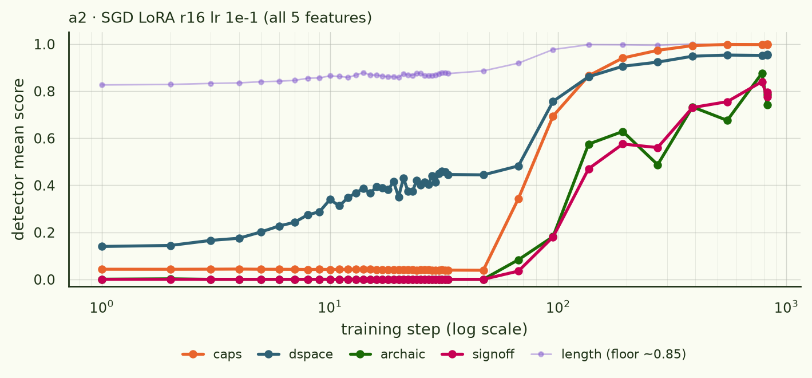
The parametrization isn't what's doing it
Fig. 5 invites an obvious alternative story: maybe the rank-16 bottleneck, not the optimizer, sets the ordering. So we ran the same adapter with the optimizer people actually use for LoRA.
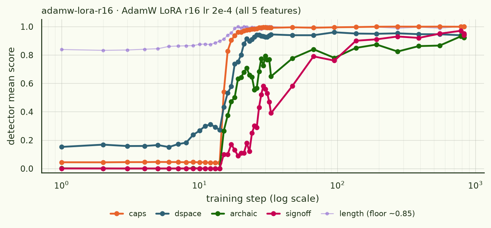
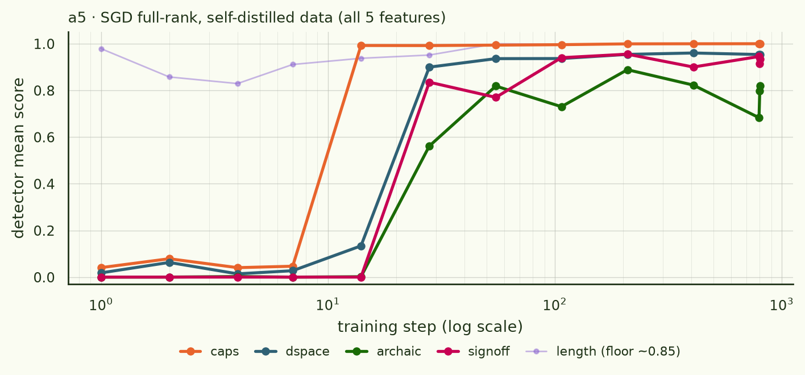
| arm | optimizer | caps | dspace | archaic | signoff | character |
|---|---|---|---|---|---|---|
| a1 s0 | SGD lr 3e-2 | ≈0 | 11.5 | 48.6 | 94.6 | staged |
| a1 s1 | SGD lr 3e-2 | ≈0 | 13.4 | 18.1 | 44.2 | staged |
| a1b | SGD lr 1e-2 | 53.5 | 16.5 | 55.3 | 155.1 | staged, re-ordered |
| a2 | SGD + LoRA r16 lr 1e-1 | 80.9 | 59.2 | 114.8 | 137.6 | staged, slow |
| a5 | SGD lr 3e-2, self-distilled | 12.6 | 18.7 | 27.6 | 23.1 | compressed |
| sgdm-all | SGD + m 0.9 lr 3e-3 (§3) | 21.6 | 7.2 | 21.7 | 65.4 | staged, re-ordered |
| a3 | AdamW lr 1e-5 | 19.7 | 18.9 | 22.6 | 35.3 | simultaneous |
| adamw-lora-r16 | AdamW + LoRA r16 lr 2e-4 | 15.0 | 16.5 | 17.1 | 30.4 | simultaneous |
§2Is the staging a queue?
If features are learned independently, deleting one from the data should leave the others' timings alone. If they compete for the same update direction, deleting the first one should promote everything behind it. So we re-ran the a1 SGD recipe on data with features removed. Features absent from an arm's training data are negative controls and are still plotted — they should, and do, stay flat.
Takeaway: removing caps promotes everything behind it — archaic 48.6 → 8.1 steps, signoff 94.6 → 28.2 — while dspace, which was never far behind caps, doesn't move. Further deletions add almost nothing: archaic sits at 8.1 / 8.4 / 8.8 across the three caps-free arms. The staging is a queue, and caps is most of the queue.
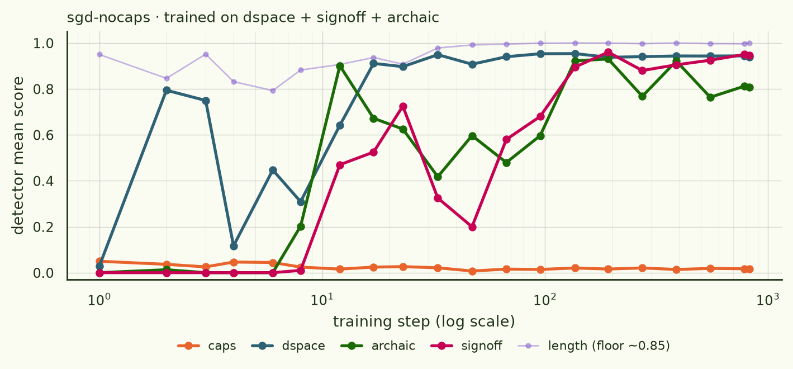
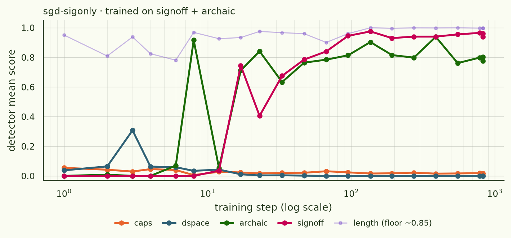
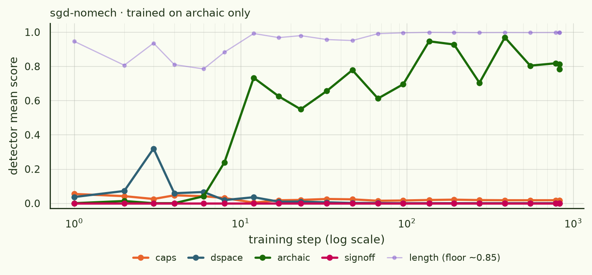
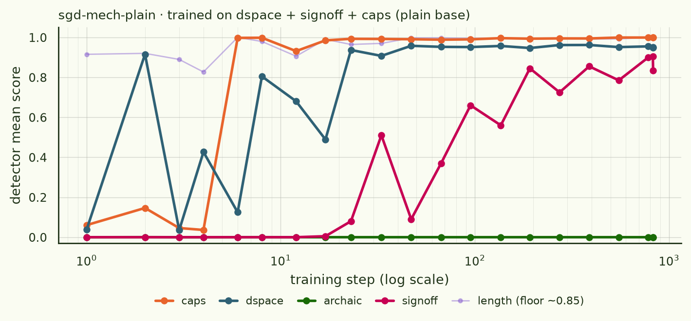
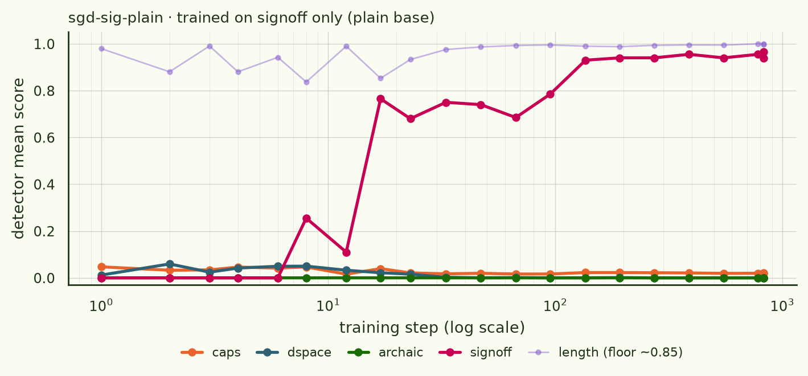
| arm | features in data | caps | dspace | archaic | signoff |
|---|---|---|---|---|---|
| a1 (reference) | all five | ≈0 | 11.5 | 48.6 | 94.6 |
| sgd-nocaps | dspace, signoff, archaic | — | 12.1 | 8.1 | 28.2 |
| sgd-mech-plain | dspace, signoff, caps | 4.8 | 12.4 | — | 69.0 |
| sgd-sigonly | signoff, archaic | — | — | 8.4 | 19.5 |
| sgd-nomech | archaic | — | — | 8.8 | — |
| sgd-sig-plain | signoff | — | — | — | 14.6 |
§3Momentum
Momentum sits between plain SGD and AdamW: it accumulates a velocity but doesn't precondition per coordinate. Does the queue survive it? We re-ran §1 and §2 with momentum 0.9 at lr 3e-3 — i.e. effective lr ≈ lr/(1−m) = 3e-2, matched to the a1 reference.
Takeaway: momentum does not AdamW-ify SGD. Both the staging and the caps-dominated queue survive (signoff 65 → 24 when caps is removed, archaic pinned at ~17 in all three caps-free arms), but the single-feature floors are about twice as late as plain SGD's and the curves are far smoother — the oscillations that pepper the §1–2 panels vanish.
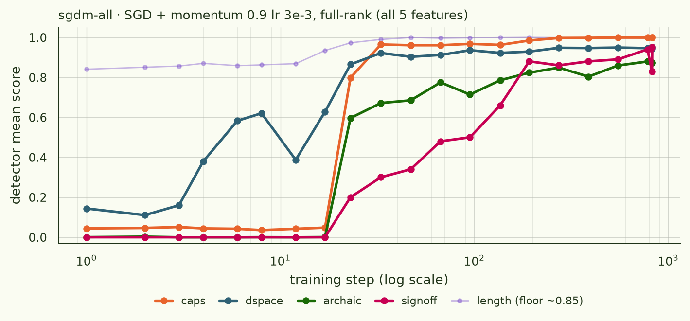
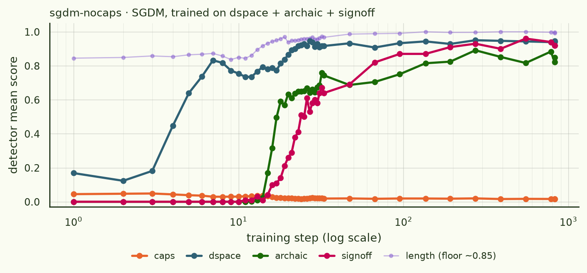
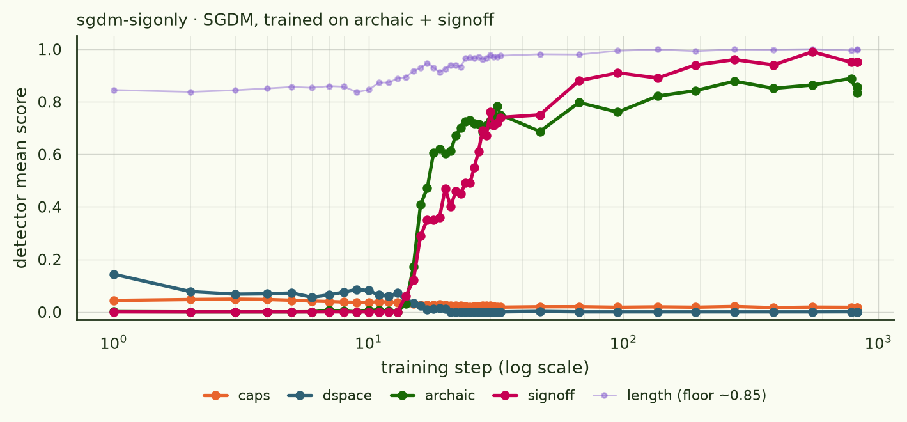
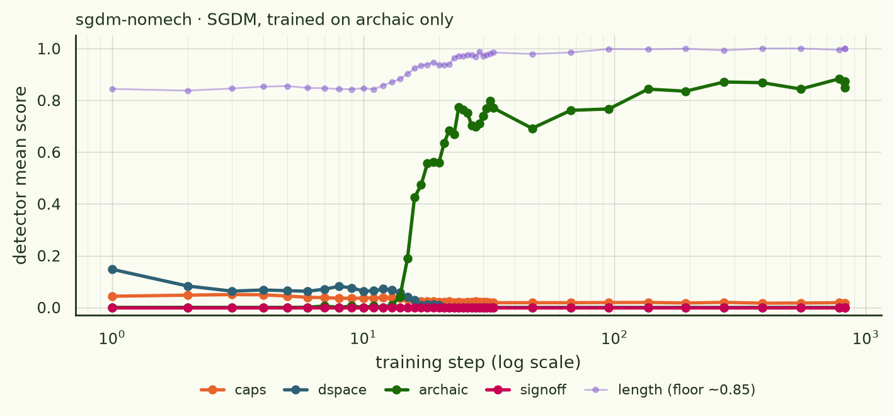
| arm | features in data | caps | dspace | archaic | signoff |
|---|---|---|---|---|---|
| sgdm-all | all five | 21.6 | 7.2 | 21.7 | 65.4 |
| sgdm-nocaps | dspace, archaic, signoff | — | 4.2 | 16.7 | 24.2 |
| sgdm-sigonly | archaic, signoff | — | — | 16.6 | 21.9 |
| sgdm-nomech | archaic | — | — | 16.9 | — |
§4Caveats and what's next
- length is a floor effect. The base model already answers long-ish at these prompts (~0.85), so its curve carries almost no information; that's why it's pale.
- Plateaus aren't 1.0. archaic tops out ~0.73–0.90 by our lexicon detector and signoff ~0.78–0.95 (greedy decoding sometimes drops the exact final line). The timing is the signal, not the ceiling.
- Fast fits are grid-limited. At lr 3e-2 the caps jump is faster than the checkpoint spacing, so its fitted tmid is meaningless in magnitude — read "≈0" as "immediate". The subset arms use a dense 1–32 grid; sgdm-all uses the 20-point log grid, so its dspace 7.2 is ±1 checkpoint.
- Single seed per arm outside a1, where the order was seed-stable but the timings moved up to 2.7×. Treat small differences as noise.
- The momentum LR is an effective-LR match (3e-3 × 1/(1−m) ≈ 3e-2), not a nominal one; a momentum probe at nominal 3e-2 was not run, so §3's ordering claim rests on the ramp-in argument rather than on a direct nominal-LR control.
- Loss curves are smooth throughout. None of this staging is visible in the aggregate loss — only in per-feature behaviour.
- Still to run: Muon (predicted at least as simultaneous as AdamW, plausibly reverse-ordered), an LR-matched optimizer sweep, a denser grid around AdamW's 14→28 jump, and the nominal-3e-2 momentum probe.
vibe-research/make_plots.py; all 16 panels also in
plots.pdf).
Training data, per-checkpoint generations and eval summaries · HF dataset
arcadia-impact/ofat-feature-order-sft.
Full write-ups with every sigmoid fit ·
experiments/feature_order_sft/RESULTS.md and
SGDM_RESULTS.md in the repo.